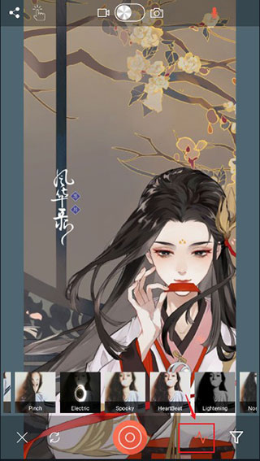

Defekt 深度盘点——手机上的参数化特效创作工具到底有多能打
Defekt 不只是一款滤镜应用，它把实时特效做成了一套完整的创作工具链。本文从遮罩、调参、动态录制四个能力域拆解它的核心玩法，帮你判断这款应用值不值得认真对待。
它是什么——一个把"特效"做到参数化的手机应用
市面上大多数手机摄影应用的套路很简单：选一个滤镜，套上去，拍完走人。特效是预设好的，你能调的无非是强度和透明度。但 Defekt 走了一条完全不同的路——从 Defekt官网 就能感受到，它把每一种特效都做成了可调节参数的创作引擎，从遮罩形状到颜色偏移，从条纹密度到旋转角度，每一层都给你留了动手空间。
这意味着什么？意味着同一种特效，你可以调出克制的低饱和电影感，也可以一键拉到狂暴的赛博朋克风；意味着你拍一张照片，遮罩内是水彩融化、遮罩外是正常画面，两者之间的对比本身就是作品；意味着你录一段视频，全程不只是"一个特效走到黑"——录制中可以随时切换、实时调参，让画面在动态中变化。
Defekt 值得认真盘点的地方，在于它不满足于当一个"滤镜包"，而是在手机上试图回答一个更有意思的问题：实时特效能不能成为一门独立的创作语言？下面我们按能力域逐一拆解。

能力域一：形状遮罩——让特效只在你想要的地方生效
遮罩是 Defekt 和同类应用拉开差距的第一个维度。其他应用的遮罩通常是固定的圆形或矩形，而 Defekt 内置了二十多种形状，分五个大类：基础几何（圆、方、矩形、椭圆）、心形、星形、钻石，还有圆环、月牙、云朵、光斑、胶片框这些特色形状。选中遮罩后，画面里同时出现两种状态——遮罩内是特效渲染后的样子，遮罩外是原始画面，两者之间的分层和对比就是它的核心价值。
遮罩本身不是静态的。Defekt 给了它四个可调参数：大小（遮罩在画面里的占比）、位置（手动拖动中心坐标）、反转（把"内有特效"变成"外有特效"）、边缘羽化（控制过渡的平滑度）。这四个旋钮组合起来，遮罩的用法就变得非常灵活。
举两个例子你就能感受到差别。圆形遮罩搭配人像 dilate 特效——圆形内的人脸是水彩融化效果，圆形外的背景正常，画面既有艺术感又不丢失环境信息，比全图套水彩精致得多。再比如心形遮罩加 rainbow 彩虹重影，心形内是 RGB 分离的彩边，心形外保留原色，情侣合影瞬间有了创意构图，而不是千篇一律的自拍滤镜。遮罩反转的玩法更有趣——让遮罩内正常、遮罩外是 wind 条纹，相当于让画面的边缘区域"坏"掉，中心保持干净，这是横向构图时非常好用的手法。

能力域二：参数面板——每个特效都有独立的"调色盘"
如果说遮罩解决的是"特效在哪生效"的问题，那参数面板解决的就是"特效长什么样"。Defekt 的每个特效都有独立的参数面板，里面是一个个可以拖动的旋钮，不是简单的"强度一条"。这些参数里，最值得单独拎出来讲的是色相偏移。
色相偏移是每个特效都有的颜色类旋钮，它把特效画面里的所有颜色往一个方向整体偏移——往右拉偏冷（青、蓝、紫），往左拉偏暖（红、橙、黄），不改变亮度和饱和度，只改色相环上的位置。这一个旋钮，是最快改变画面整体气质的入口。轻微暖偏移（+10% 到 +20%）能让肤色更柔和、画面有夕阳感；轻微冷偏移（-10% 到 -20%）出电影感和清新感；强暖偏移（+50% 以上）直接进复古胶片感；强冷偏移（-50% 以上）就是赛博朋克那味。
调色相的建议很简单：每次只调一点点。5% 的变化肉眼已经能察觉，推荐从 0 开始，先往一个方向拉 10-15% 看效果，不满意再往反方向，在两个方向之间找到最喜欢的那个再微调 ±5%。一下拉到极值很容易过调。另外，色相偏移在不同特效上的影响程度不一样——rainbow 彩虹重影直接改变 RGB 分离的光谱顺序，冷偏移调成蓝紫色主导、暖偏移调成红橙色主导；wind 风之条纹让整个条纹偏一个色调；dilate 水彩融化直接影响水彩的质感基调。有些版本还提供饱和度旋钮和色相配对使用，降低饱和度加轻微色相偏移是一种很低调的高级感，接近低饱和电影色调。更多参数组合和进阶技巧可以去 Defekt文档 里翻。
能力域三：wind 风之条纹——同一个特效的三种人生
之所以单独把 wind 拿出来说，是因为它完美展示了 Defekt 参数化的魅力——同一个特效，三组不同的调参方向，出来的是三种完全不同的质感，仿佛三个独立特效。
wind 的参数有五个：条纹密度（画面被拆成多少条）、偏移幅度（每条能横向移动的最大距离）、旋转角度（每条的最大旋转角度）、速度（条纹变化的快慢）、色相偏移（整体色调）。这五个旋钮的排列组合，就是 wind 的全部玩法。
第一种方向是克制的"报纸拼贴"风格——适合想保留画面辨识度的场景：条纹密度保持中等，偏移幅度调低让条纹不要移太远、主体轮廓还看得出来，旋转角度调低或关闭让条纹基本平直，色相保持 0 或轻微冷色调。出来的效果像一张被风吹过又贴回去的报纸碎片，拼贴感有了但不混乱。
第二种方向是狂暴的"风吹暴雨"风格——适合需要强烈视觉冲击的短视频：条纹密度拉到最高让画面碎成几百条，偏移幅度拉满，旋转角度拉满，速度拉高让条纹快速变化，色相随意调一个强烈偏色。整个画面像被暴风撕碎又重新拼合，冲击力极强。
第三种方向是极简的"条形码"风格——条纹密度调高，偏移幅度完全关闭，旋转角度完全关闭，速度关闭变成静态。画面直接变成一排平行的窄条，像扫描线或条形码，这种极简感是前两个方向都做不到的。
更有意思的是，如果打开音频响应，wind 的偏移幅度会随声音强度变化——说话声音大时条纹"散"得更开，速度会随节奏加快。对短视频创作者来说，这意味着你的特效可以跟着音乐的鼓点自然变化，而不是手工卡节拍。

能力域四：录屏模式——动态创作，不是拍完再剪
很多特效应用的视频功能是"选好特效、按下录制、全程不变"。如果你还没 下载 体验过它，Defekt 的录屏模式从根本上不同——录制过程中可以随时横向滑动切换特效、打开参数面板实时调参，画面在不同质感之间平滑过渡，不是生硬切换。
这个区别带来了一个全新的创作逻辑：你可以把一段视频拆成段落来设计特效节奏。开头 3-5 秒用一种克制的特效（比如水彩融化的低强度）让观众逐步进入，中间切换到更有冲击力的特效（彩虹重影或风之条纹）制造节奏，结尾 2-3 秒切回原图或低强度特效收束。整个过程不需要暂停、不需要进子菜单，直接在取景框里滑动操作就行。
录制时还可以点手势按钮对比原图（不会打断录制）、切换前后摄（部分设备支持）。视频参数方面支持分辨率选择（480p / 720p / 1080p）和帧率选择（30fps 或 60fps），高帧率下部分旧机型可能卡顿但官方有修复日志。音频会一起录进去，如果想让特效跟着音乐跳，录制前先播放音乐，特效随音乐变化，声音也会一并记录——音频响应的灵敏度可以在参数面板里调整。
短板也要说
Defekt 当然不是完美的。首先，对手机性能有要求，60fps 高帧率模式在部分旧机型上会卡顿甚至崩溃，需要降回 30fps。其次，参数面板虽然强大，但也意味着上手需要点耐心——不像一键滤镜那样秒出片，你需要花时间理解每个旋钮在调什么、往哪个方向拉会产生什么变化。对只想快速出一张好看照片的用户来说，这个学习曲线可能劝退。另外，Defekt 目前是手机端应用，没有桌面版本，这对习惯在电脑上做后期的创作者来说是个限制。
什么样的人该用它
第一类是短视频创作者——不管是抖音、B 站还是 Vlog，录屏模式的动态特效切换能力都是差异化竞争力。你的视频可以有节奏地变化质感，而不是全程一个特效走到头，这在信息流里辨识度很高。
第二类是喜欢参数化创作的摄影爱好者——如果你不满足于预设滤镜、喜欢自己调出来独一无二的效果，Defekt 的参数面板深度刚好。色相偏移、遮罩形状、wind 的三个方向组合，每一个都值得花时间试出自己的风格。
第三类是特效实验派——Defekt 的遮罩加特效组合空间很大，心形遮罩加 rainbow、遮罩反转加 wind、圆形遮罩加 dilate，把特效限制在局部再反转，每一次组合都是新发现。如果你享受"我调了一下然后画面变神奇了"那种惊喜感，Defekt 就是为你做的。
尾声
Defekt 这套资料我整理了一份完整文档，涵盖从安装上手到每个特效的参数详解，想深入研究的可以去 Defekt 的官方下载链接拿安装包。资料同步维护在 GitHub、Gitee、GitCode 三个仓库，方便不同网络环境和偏好的读者随时查阅。